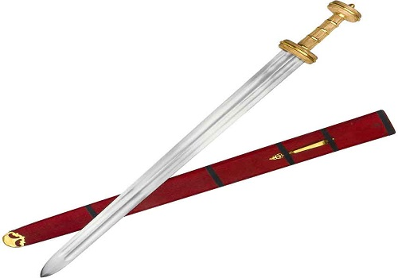
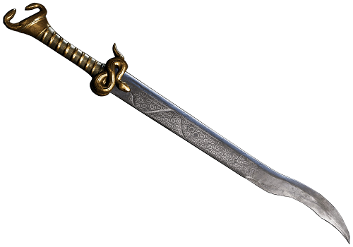

Um punhal romano para combates mais próximos, esse punhal provavelmente era usado para propósitos mais ornamentados porque não era ideal para uso geral. Ao longo dos anos, o pugio evoluiu bastante, alguns deles apresentavam uma lâmina em forma de folha ou uma pequena ponta triangular. comumente de bronze ou ferro, com o punho variadamente ornado ou enriquecido, às vezes feito de madeira dura preta do terebinto sírio.
O nome grego e latino dessa arma denota a pequenez do artefato e a maneira de segurá-lo na mão. Ele era uma das armas utilizadas pelo gladiador reciário, soldados e cidadões romanos, por ser pequena podia-se ser guardada e carregada com facilidade. user uploaded image Os soldados romanos usavam a adaga como arma ofensiva secundária.
Elas tambem eram frequentemente decorados e eram claramente um símbolo de status. Soldados pararam de usar o pugio no século II dC, mas ele ocupa um lugar na cultura por ter sido usado em assassinatos, incluindo o assassinato de Júlio César.
Era um tipo de arma romana com lâmina de gumes retos, geralmente de seção lenticular ou em diamante, e caracterizada por ser mais comprida do que o gládio. Entrou em uso no território do Império Romano durante o 1º ao 6º séculos dC. Espadas posteriores, do século VII ao X, como as espadas vikings, são reconhecíveis como derivados e às vezes são incluídas no termo spatha.
Quando o gladius caiu em esquecimento, o spatha assumiu o lugar. A spatha era essencialmente uma versão mais longa do gladius de Pompeia. Sua lâmina era longa, estreita e reta. O comprimento típico da lâmina foi entre 71 cm e 1 metrô.
A sua origem é completamente desconhecida, mas os registos remontam ao Império Romano, ainda no século I, foi ali presumivelmente introduzida por guerreiros germanos (se na infantaria ou na cavalaria isso não é certo), tornando-se uma arma padrão da infantaria pesada, e diminuindo o uso mas nao banindo o gládio como arma típica da infântaria ligeira. Não há provas de que a espada era usada exclusivamente para golpear. Substituiu o gládio aparentemente nas linhas dianteiras, permitindo o avanço da infantaria.
Quando Espadas não alcançavam o inimigo os soldados romanos confiavam no pilum, que era uma longa lança ou dardo. Havia dois tipos: grosso e magro. O magro tinha uma longa ponta de ferro, tinha cerca de 2 m de comprimento, com uma ponta afiada. O pilum grosso tinha o mesmo comprimento e estava preso ao eixo com uma espiga de 5 cm de largura. A ponta de ambas as armas tinha uma farpa em forma de pirâmide. O eixo de ambos tinha cerca de 7,5 mm de diâmetro. No pilum grosso havia um bloco de madeira para segurar a cabeça de metal. O bloqueio também protegia a mão em combates corpo a corpo. Soldados carregavam os dois tipos de lança.
Versões posteriores do pilum no primeiro século foram construídas de forma semelhante, mas as pilum grossas eram muito mais leves, pesando cerca de 2kg. Esta evolução do pilum levou à introdução de uma versão do pilum pesado com uma bola pesada no topo do eixo, para ajudar a equilibrar a lança. A bola era feita de ferro mais macio, de modo que dobrasse a ponta com o impacto e peso da bola, impedindo que o inimigo jogasse a lança de volta. O pilum poderia ser jogado ou usado em combate corpo a corpo. Geralmente era jogado antes dos exércitos se encontrarem em combate corpo a corpo com espadas.
Um tipo de espada ou foice referida em fontes da Grécia e Roma Antigas, quase sempre no contexto mitológico. Seu uso mais notório consiste em ter sido a arma usada por Perseu quando decapitou a Medusa, e por Cronos quando castrou seu pai, Urano. Nas artes grega e romana é retrata em variadas formas, especialmente no formato de khopesh, uma espada com a curvatura como da foice. Representações posteriores dão-lhe a forma de espada em forma de foice, descrita no século II na obra de Aquiles Tácio, As Aventuras de Leucipo e Clitofon".
René Menard descreve-a, quando usada por Perseu, como uma "espécie de faca recurva", usada pelo herói junto ao capacete de Hades e uma clâmide que vestia - segundo representado num verso dum espelho etrusco. Nas representações em pedra o herói sempre surge com a harpe e a cabeça da Medusa.
A harpe foi a arma usada por Cronos (Saturno) para castrar o próprio pai, Urano. A arma lhe teria sido entregue pela própria mãe, Gaia (a Terra). Como teria sido este o deus que ensinou aos homens a agricultura, é mais tarde representado com a foice, e não mais com a harpe.
